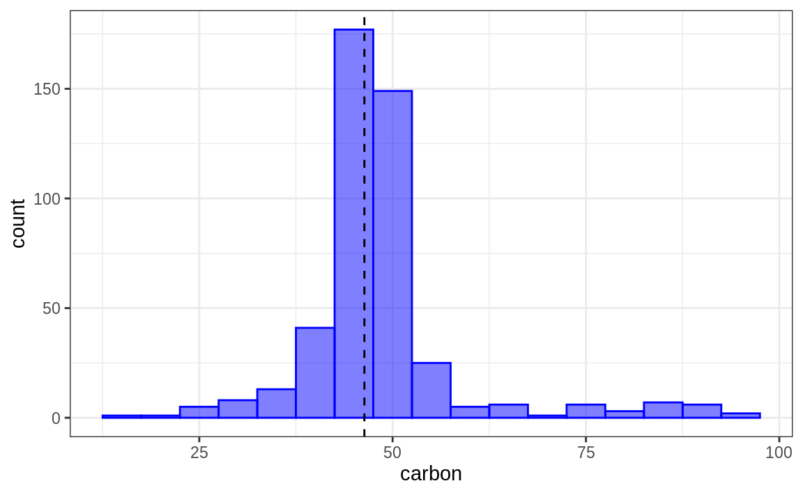
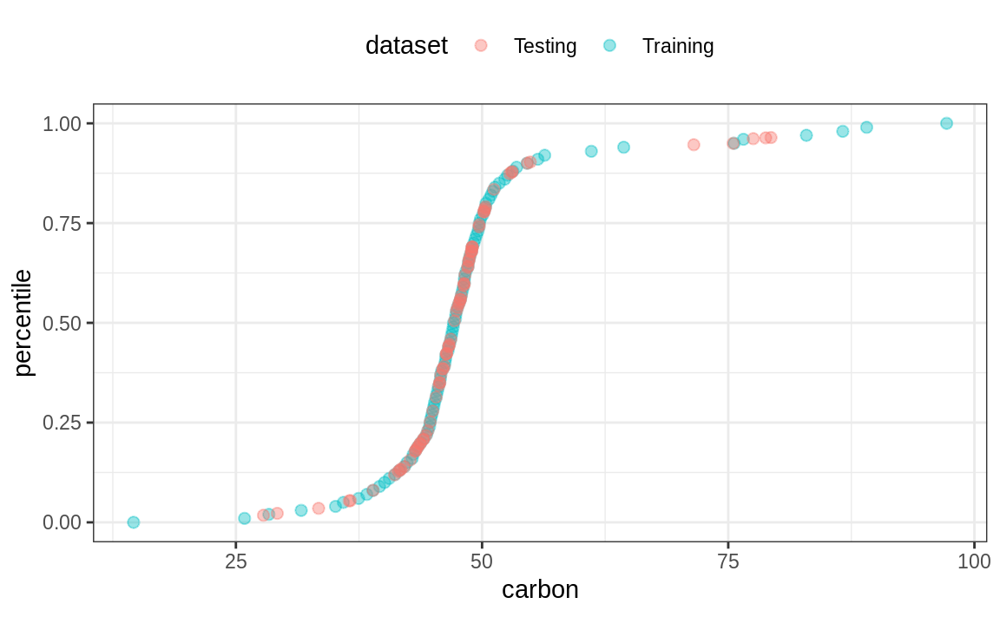

The recipes package contains a number of different operations:
library(recipes) ls("package:recipes", pattern = "^step_") #> [1] "step_arrange" "step_bagimpute" "step_bin2factor" #> [4] "step_BoxCox" "step_bs" "step_center" #> [7] "step_classdist" "step_corr" "step_count" #> [10] "step_date" "step_depth" "step_discretize" #> [13] "step_downsample" "step_dummy" "step_factor2string" #> [16] "step_filter" "step_geodist" "step_holiday" #> [19] "step_hyperbolic" "step_ica" "step_integer" #> [22] "step_interact" "step_intercept" "step_inverse" #> [25] "step_invlogit" "step_isomap" "step_knnimpute" #> [28] "step_kpca" "step_kpca_poly" "step_kpca_rbf" #> [31] "step_lag" "step_lincomb" "step_log" #> [34] "step_logit" "step_lowerimpute" "step_meanimpute" #> [37] "step_medianimpute" "step_modeimpute" "step_mutate" #> [40] "step_mutate_at" "step_naomit" "step_nnmf" #> [43] "step_normalize" "step_novel" "step_ns" #> [46] "step_num2factor" "step_nzv" "step_ordinalscore" #> [49] "step_other" "step_pca" "step_pls" #> [52] "step_poly" "step_profile" "step_range" #> [55] "step_ratio" "step_regex" "step_relevel" #> [58] "step_relu" "step_rename" "step_rename_at" #> [61] "step_rm" "step_rollimpute" "step_sample" #> [64] "step_scale" "step_shuffle" "step_slice" #> [67] "step_spatialsign" "step_sqrt" "step_string2factor" #> [70] "step_unknown" "step_unorder" "step_upsample" #> [73] "step_window" "step_YeoJohnson" "step_zv"
You might need to define your own operations; this page describes how to do that. If you are looking for good examples of existing steps, I would suggest looking at the code for centering or PCA to start.
For checks, the process is very similar. Notes on this are given at the end of this document.
As an example, let’s create a step that replaces the value of a variable with its percentile from the training set. The date that I’ll use is from the recipes package:
library(modeldata) data(biomass) str(biomass) #> 'data.frame': 536 obs. of 8 variables: #> $ sample : chr "Akhrot Shell" "Alabama Oak Wood Waste" "Alder" "Alfalfa" ... #> $ dataset : chr "Training" "Training" "Training" "Training" ... #> $ carbon : num 49.8 49.5 47.8 45.1 46.8 ... #> $ hydrogen: num 5.64 5.7 5.8 4.97 5.4 5.75 5.99 5.7 5.5 5.9 ... #> $ oxygen : num 42.9 41.3 46.2 35.6 40.7 ... #> $ nitrogen: num 0.41 0.2 0.11 3.3 1 2.04 2.68 1.7 0.8 1.2 ... #> $ sulfur : num 0 0 0.02 0.16 0.02 0.1 0.2 0.2 0 0.1 ... #> $ HHV : num 20 19.2 18.3 18.2 18.4 ... biomass_tr <- biomass[biomass$dataset == "Training",] biomass_te <- biomass[biomass$dataset == "Testing",]
To illustrate the transformation with the carbon variable, the training set distribution of that variables is shown below with a vertical line for the first value of the test set.
library(ggplot2) theme_set(theme_bw()) ggplot(biomass_tr, aes(x = carbon)) + geom_histogram(binwidth = 5, col = "blue", fill = "blue", alpha = .5) + geom_vline(xintercept = biomass_te$carbon[1], lty = 2)

Based on the training set, 42.1% of the data are less than a value of 46.35. There are some applications where it might be advantageous to represent the predictor values as percentiles rather than their original values.
Our new step will do this computation for any numeric variables of interest. We will call this step_percentile. The code below is designed for illustration and not speed or best practices. I’ve left out a lot of error trapping that we would want in a real implementation.
The user-exposed function step_percentile is just a simple wrapper around an internal function called add_step. This function takes the same arguments as your function and simply adds it to a new recipe. The ... signifies the variable selectors that can be used.
step_percentile <- function( recipe, ..., role = NA, trained = FALSE, ref_dist = NULL, approx = FALSE, options = list(probs = (0:100)/100, names = TRUE), skip = FALSE, id = rand_id("percentile") ) { ## The variable selectors are not immediately evaluated by using ## the `quos` function in `rlang`. `ellipse_check` captures the ## values and also checks to make sure that they are not empty. terms <- ellipse_check(...) add_step( recipe, step_percentile_new( terms = terms, trained = trained, role = role, ref_dist = ref_dist, approx = approx, options = options, skip = skip, id = id ) ) }
You should always keep the first four arguments (recipe though trained) the same as listed above. Some notes:
role argument is used when you either 1) create new variables and want their role to be pre-set or 2) replace the existing variables with new values. The latter is what we will be doing and using role = NA will leave the existing role intact.trained is set by the package when the estimation step has been run. You should default your function definition’s argument to FALSE.skip is a logical. Whenever a recipe is prepped, each step is trained and then baked. However, there are some steps that should not be applied when a call to bake is used. For example, if a step is applied to the variables with roles of “outcomes”, these data would not be available for new samples.id is a character string that can be used to identify steps in package code.I’ve added extra arguments specific to this step. In order to calculate the percentile, the training data for the relevant columns will need to be saved. This data will be saved in the ref_dist object. However, this might be problematic if the data set is large. approx would be used when you want to save a grid of pre-computed percentiles from the training set and use these to estimate the percentile for a new data point. If approx = TRUE, the argument ref_dist will contain the grid for each variable.
We will use the stats::quantile to compute the grid. However, we might also want to have control over the granularity of this grid, so the options argument will be used to define how that calculations is done. We could just use the ellipses (aka ...) so that any options passed to step_percentile that are not one of its arguments will then be passed to stats::quantile. We recommend making a separate list object with the options and use these inside the function.
Next, you can utilize the internal function step that sets the class of new objects. Using subclass = "percentile" will set the class of new objects to `“step_percentile”.
step_percentile_new <- function(terms, role, trained, ref_dist, approx, options, skip, id) { step( subclass = "percentile", terms = terms, role = role, trained = trained, ref_dist = ref_dist, approx = approx, options = options, skip = skip, id = id ) }
This constructor function should have no default argument values.
You will need to create a new prep method for your step’s class. To do this, three arguments that the method should have:
function(x, training, info = NULL)
where
x will be the step_percentile objecttraining will be a tibble that has the training set datainfo will also be a tibble that has information on the current set of data available. This information is updated as each step is evaluated by its specific prep method so it may not have the variables from the original data. The columns in this tibble are variable (the variable name), type (currently either “numeric” or “nominal”), role (defining the variable’s role), and source (either “original” or “derived” depending on where it originated).You can define other options.
The first thing that you might want to do in the prep function is to translate the specification listed in the terms argument to column names in the current data. There is an internal function called terms_select that can be used to obtain this.
prep.step_percentile <- function(x, training, info = NULL, ...) { col_names <- terms_select(terms = x$terms, info = info) }
Once we have this, we can either save the original data columns or estimate the approximation grid. For the grid, we will use a helper function that enables us to run do.call on a list of arguments that include the options list.
get_pctl <- function(x, args) { args$x <- x do.call("quantile", args) } prep.step_percentile <- function(x, training, info = NULL, ...) { col_names <- terms_select(terms = x$terms, info = info) ## You can add error trapping for non-numeric data here and so on. See the ## `check_type` function to do this for basic types. ## We'll use the names later so if (x$options$names == FALSE) rlang::abort("`names` should be set to TRUE") if (!x$approx) { ref_dist <- training[, col_names] } else { ref_dist <- purrr::map(training[, col_names], get_pctl, args = x$options) } ## Use the constructor function to return the updated object. ## Note that `trained` is set to TRUE step_percentile_new( terms = x$terms, trained = TRUE, role = x$role, ref_dist = ref_dist, approx = x$approx, options = x$options, skip = x$skip, id = x$id ) }
bake methodRemember that the prep function does not apply the step to the data; it only estimates any required values such as ref_dist. We will need to create a new method for our step_percentile class. The minimum arguments for this are
function(object, new_data, ...)
where object is the updated step function that has been through the corresponding prep code and new_data is a tibble of data to be processed.
Here is the code to convert the new data to percentiles. Two initial helper functions handle the two cases (approximation or not). We always return a tibble as the output.
## Two helper functions pctl_by_mean <- function(x, ref) mean(ref <= x) pctl_by_approx <- function(x, ref) { ## go from 1 column tibble to vector x <- getElement(x, names(x)) ## get the percentiles values from the names (e.g. "10%") p_grid <- as.numeric(gsub("%$", "", names(ref))) approx(x = ref, y = p_grid, xout = x)$y/100 } bake.step_percentile <- function(object, new_data, ...) { require(tibble) ## For illustration (and not speed), we will loop through the affected variables ## and do the computations vars <- names(object$ref_dist) for (i in vars) { if (!object$approx) { ## We can use `apply` since tibbles do not drop dimensions: new_data[, i] <- apply(new_data[, i], 1, pctl_by_mean, ref = object$ref_dist[, i]) } else new_data[, i] <- pctl_by_approx(new_data[, i], object$ref_dist[[i]]) } ## Always convert to tibbles on the way out as_tibble(new_data) }
Let’s use the example data to make sure that it works:
library(purrr) rec_obj <- recipe(HHV ~ ., data = biomass_tr[, -(1:2)]) %>% step_percentile(all_predictors(), approx = TRUE) %>% prep(training = biomass_tr) #> Warning in regularize.values(x, y, ties, missing(ties)): collapsing to unique #> 'x' values #> Warning in regularize.values(x, y, ties, missing(ties)): collapsing to unique #> 'x' values #> Warning in regularize.values(x, y, ties, missing(ties)): collapsing to unique #> 'x' values percentiles <- bake(rec_obj, biomass_te) #> Warning in regularize.values(x, y, ties, missing(ties)): collapsing to unique #> 'x' values #> Warning in regularize.values(x, y, ties, missing(ties)): collapsing to unique #> 'x' values #> Warning in regularize.values(x, y, ties, missing(ties)): collapsing to unique #> 'x' values percentiles #> # A tibble: 80 x 6 #> carbon hydrogen oxygen nitrogen sulfur HHV #> <dbl> <dbl> <dbl> <dbl> <dbl> <dbl> #> 1 0.421 0.45 0.903 0.215 0.735 18.3 #> 2 0.18 0.385 0.922 0.928 0.839 17.6 #> 3 0.156 0.385 0.945 0.9 0.805 17.2 #> 4 0.423 0.775 0.28 0.845 0.902 18.9 #> 5 0.666 0.867 0.631 0.155 0.09 20.5 #> 6 0.218 0.385 0.536 0.495 0.7 18.5 #> 7 0.0803 0.271 0.986 0.695 0.903 15.1 #> 8 0.139 0.126 0.160 0.606 0.7 16.2 #> 9 0.0226 0.103 0.131 0.126 0.996 11.1 #> 10 0.0178 0.0821 0.0987 0.972 0.974 10.8 #> # … with 70 more rows
The plot below shows how the original data line up with the percentiles for each split of the data for one of the predictors:

The process here is exactly the same as steps; the internal functions have a similar naming convention:
add_check instead of add_step
check instead of step, and so on.It is strongly recommended that:
check_ (i.e. check_range and check_range_new)rlang::abort(paste0(...)) when the conditions are not met